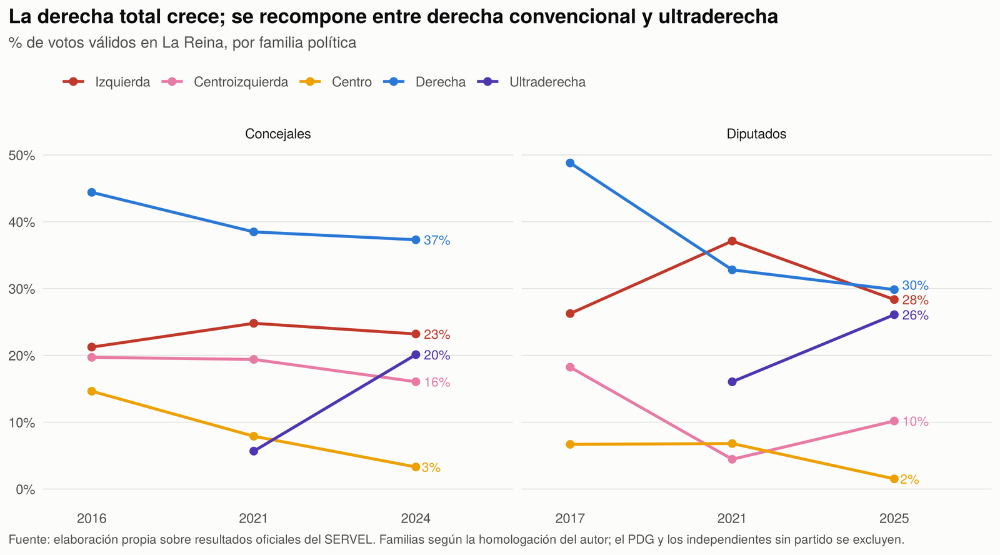
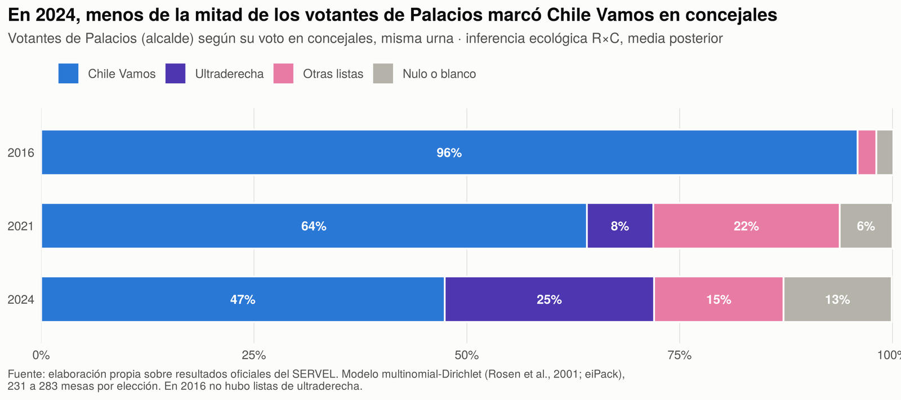
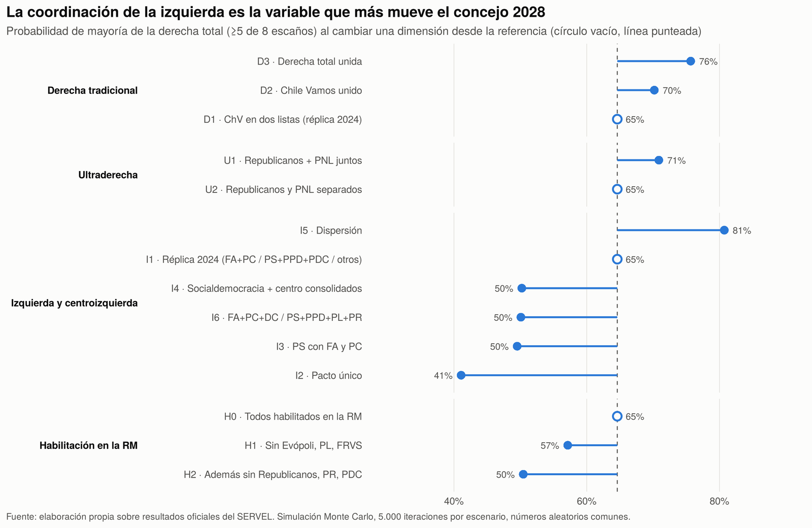
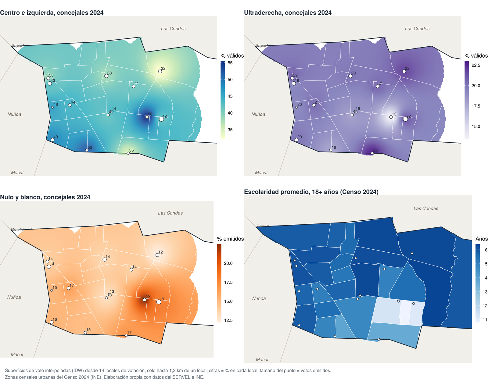

La Reina towards 2028: realignment, split-ticket voting and municipal scenarios
In 2028 La Reina will elect a mayor and eight councillors without the sitting mayor on the ballot for the first time since 2016: José Manuel Palacios completes his third term and Law No. 21,238 bars him from running again. The election also follows three major changes: compulsory voting doubled the number of voters, the far right went from no representation to 20.1% of the council vote, and the party system is being reformed.
This working paper asks how the municipality's electorate changed between 2016 and 2025 and which conditions matter most for the composition of its municipal government in 2028. This entry summarises its findings; the full paper develops the theoretical framework, the method and the limitations.
Data and methods
The analysis uses 29 ballots from 25 electoral processes between 2016 and 2025, with the official Electoral Service (SERVEL) files at polling-station level, checked against municipal totals. It combines four tools: a D'Hondt allocation engine that reproduces the 24 councillors elected in 2016, 2021 and 2024; a Bayesian R×C ecological inference model to estimate split-ticket voting between the mayoral and council ballots; a Monte Carlo simulation of 108 list architectures for the 2028 council, with 5,000 iterations each; and the geocoding of polling places with the 2024 Census zones. All processing is reproducible in R.
Seven findings
1. The right as a whole grows, but recomposes from within
In the council vote, the right as a whole rises from 44.4% in 2016 to 57.4% in 2024. The entire increase goes to the far right (from 0% to 20.1%), while the mainstream right falls from 44.4% to 37.3%. The centre and left, a majority in 2016 and 2021, fall to 42.6%, almost entirely because of the decline of the PDC. With compulsory voting, blank and null council votes tripled, from 5.2% to 15.8%.

2. Palacios's 2024 vote was not a coalition vote
Without any assumption, at most 49% of Palacios's voters could have voted for Chile Vamos for council. The R×C model estimates 47.4%; 24.6% voted for the far right, 15.2% for other lists and 12.7% blank or null. The match between the mayoral vote and the vote for his list fell from 95.9% in 2016 to 47.4% in 2024. His vote is therefore not transferable as a block to a successor.

3. List coordination decides the 2028 council
With lists formed as in 2024, the right as a whole wins a majority (five or more of eight seats) in 65% of simulations. A single centre-left pact lowers that to 41%; dispersion raises it to 81%. Uniting the right raises it by 5 to 11 points. No single assumption about the vote produces a change of that size: with D'Hondt and eight seats, fragmentation costs seats even if a bloc's vote does not change.

4. Coordination and the national climate add up
Municipal elections tend to work as second-order elections, in which voters punish the parties of the national government. The model does not estimate that punishment; it treats it as an assumption and crosses it with the list architecture:
| Centre and left | Penalty on the government | Right-wing majority | 4-4 tie | Centre-left majority |
|---|---|---|---|---|
| As in 2024 | 0% | 65% | 21% | 15% |
| As in 2024 | 20% | 50% | 26% | 24% |
| Single pact | 0% | 41% | 30% | 29% |
| Single pact | 20% | 27% | 31% | 43% |
| Dispersion | 20% | 69% | 17% | 14% |
The national climate works as a condition that amplifies or cancels the effect of coordination, not as a substitute for it.
5. The vote has a territory, except for the far right
Each part of the municipality resembles the municipality it borders: the centre and left win 47.8% on the southern edge, next to Peñalolén, and 32.1% in La Reina Alta, next to Las Condes. The far right, in contrast, wins between 18% and 22% everywhere. Blank and null votes do follow socioeconomic status: their correlation with average schooling in the census zone is −0.86 across polling places, peaking in Villa La Reina. These are associations between areas, not between voters.

6. The 2028 rules are in flux
Palacios and the two most-voted councillors of 2024 cannot run again. Three parties that won 11.3% of the council vote were dissolved, and under the political system reform (Bill No. 17,640-06), parties with 36% of that vote are currently below the membership threshold required in the Metropolitan Region.
7. The mayoralty depends on how many candidates each camp fields
The mayor is elected by plurality in a single round. The right as a whole starts with 56% to 57% of the vote and the centre and left with 40% to 43%. With a single candidate on each side, the right starts ahead; if the right is divided and the centre and left concentrate their support, that base can win by plurality; if the centre and left fragment, as in 2016 and 2024, the right wins even if divided.
Scope
The projections are scenarios with explicit assumptions, not forecasts. Validated from 2021 to 2024, the model kept four of the five political families within its intervals, but it did not anticipate the jump of the far right; a realignment of that size in 2028 would fall outside its intervals. Because data and code are public, the scenarios can be recalculated as rules, pacts and candidacies are defined.
How to cite
Bottinelli Baltra, L. (2026). La Reina hacia 2028: realineamiento, voto cruzado y escenarios municipales (Documento de trabajo N.° 1). https://doi.org/10.5281/zenodo.23841814
The R code and processed data for this version are archived in Zenodo: https://doi.org/10.5281/zenodo.23841607.
← Back to the blog